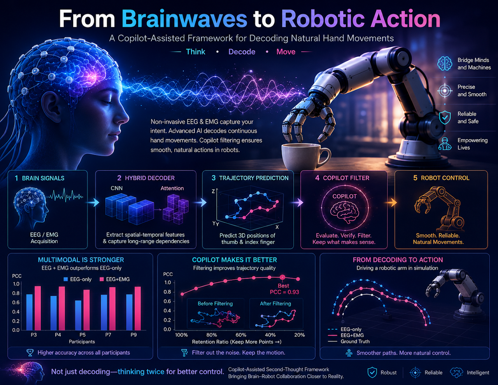
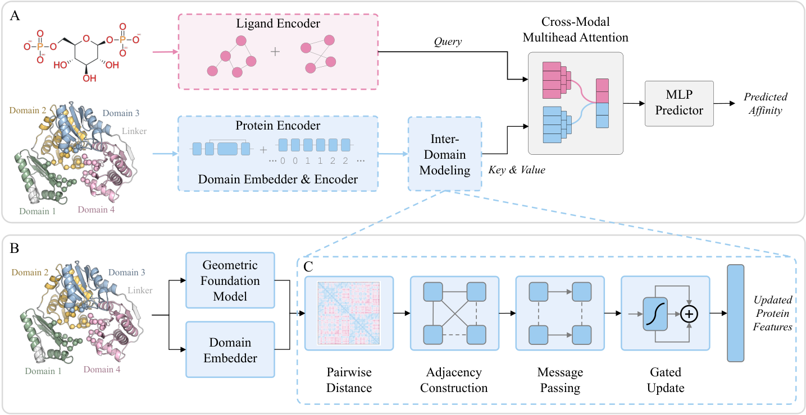
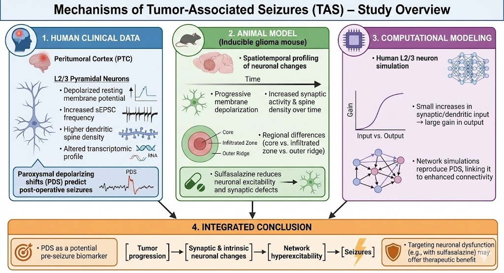
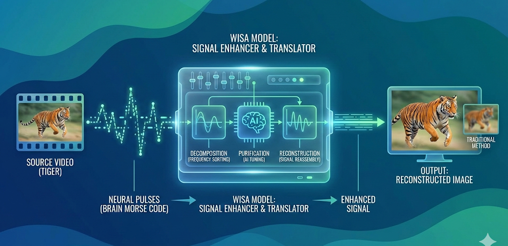
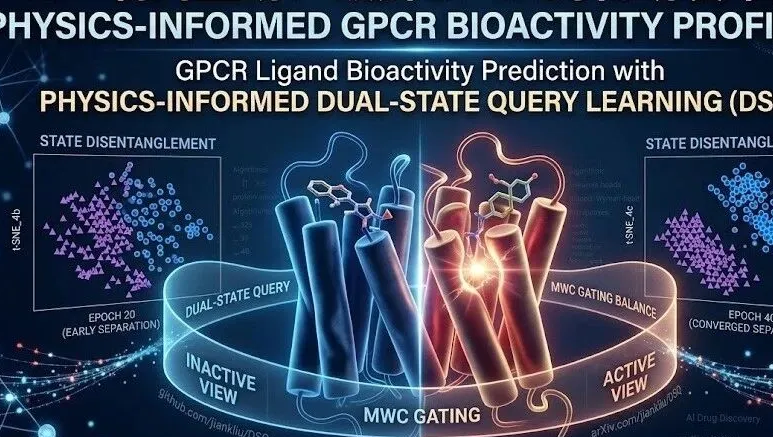

Research highlights
Questions,
explored.
A closer look at the ideas, methods and findings behind our work in neural computation and machine learning.
01 / Brain–machine interfaces / 2026
Brain-to-robot hand decoding
A Copilot framework checks neural-signal motion predictions for smoother robotic hand control.

Brain–computer interfaces translate neuronal activity into commands for external systems. This work combines EEG and EEG–EMG recordings with a neural network that predicts hand trajectories, then uses a separate motion-state critic to assess the reliability of those predictions.
The Copilot framework filters low-confidence trajectory points before they control a Franka Panda robotic arm in a MuJoCo simulation. By checking the first prediction with a second model, the study explores a way to make decoded movement more reliable. Healthcare, rehabilitation and human–machine interaction are possible future applications.
02 / Molecular machine learning / 2026
Domain-aware drug discovery
DAGML models protein domains, their interfaces and ligand motifs to predict protein-ligand affinity.

Proteins often contain several functional domains. Treating a multi-domain protein as one uniform structure can dilute signals at domain interfaces and overlook binding sites in the clefts between domains. DAGML instead represents the protein as a collection of interacting functional units.
The model combines protein language representations from ESM-2 with a geometric encoder and learnable domain embeddings. Sparse message passing focuses on nearby inter-domain contacts, using an 8 Å distance threshold, while reducing the influence of flexible linker regions.
For ligands, motif-centred representations capture functional groups rather than relying only on individual atoms. The resulting domain-aware geometric multimodal model brings protein interfaces and ligand motifs together for protein–ligand affinity prediction.
03 / Computational neuroscience / 2025
Tumour-associated seizures
Experiments and modelling investigate neuronal changes in the peritumoral cortex and seizure progression.

Why do brain tumours lead to seizures in some patients? This study examines the peritumoral cortex: the brain tissue surrounding a tumour. Recordings from resected human tissue reveal differences in synaptic activity, dendritic spines and gene expression between patients with and without tumour-associated seizures.
An inducible glioma mouse model follows neuronal changes during tumour development, while computational models explore how altered synaptic inputs and dendritic properties can produce hyperexcitability and paroxysmal depolarising shifts (PDS). In the studied patient cohort, PDS activity was associated with later postoperative seizures, suggesting a potential biomarker for further investigation.
Applying sulfasalazine to mouse brain slices partially reversed some neuronal abnormalities. Together, the human recordings, animal experiments and modelling connect tumour-associated changes in neuronal function with seizure progression. These findings support further research into mechanisms, prediction and treatment.
04 / Neural coding / 2025
Decoding natural visual scenes
WISA combines wavelet features and temporal modelling to reconstruct visual scenes from neural spikes.

Reconstructing a visual scene from neural spikes requires a model to capture the timing and structure of neuronal responses. WISA studies this problem using recorded retinal activity, combining time–frequency features with temporal modelling before decoding the visual image.
A wavelet transform extracts features at multiple scales. A temporal convolutional network refines these features, and an inverse wavelet transform produces augmented spike trains for a convolutional image decoder. The study reports improved reconstruction fidelity compared with the methods evaluated in the paper.
05 / Physics-informed machine learning / 2026
Predicting GPCR ligand bioactivity
Dual-State Query learns active and inactive receptor states to predict how ligands affect GPCR activity.

Drug discovery needs to establish more than whether a molecule binds to a receptor: it also needs to predict how that molecule changes receptor activity. Dual-State Query (DSQ) addresses this distinction for G protein-coupled receptors (GPCRs), using protein and ligand representations without explicit three-dimensional structure input.
The model learns latent representations of active and inactive receptor states and combines them through an allosteric gating mechanism inspired by the Monod–Wyman–Changeux framework. Prediction benchmarks show improved bioactivity modelling, including for agonists. The work also identifies challenges for receptors with low sequence similarity to those seen during training.